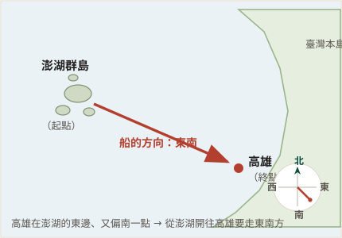

1-1 如何表示位置
關鍵在哪個時間走這段路。題幹說的是「從教室走到學校大門」——那是放學才會走的方向。放學在下午，太陽已經偏西；人朝著太陽走才會睜不開眼，所以大門在教室的西方。
🔴 卷子上印的標準答案是 (A) 東方。推測是把「上學」（早上、太陽在東）也算進去了，但早上是從大門走「進」教室，方向剛好相反。本站採西方；段考如果遇到，以老師公布的答案為準。
📌 這類題的固定作法：先確定早上還是下午 → 太陽在東還是在西 → 人是朝著太陽走還是背著太陽走。


⚠️ 先別跟著圖上的箭頭走。那條線是從高雄畫向澎湖的，是原卷用來指出「那一群小島就是澎湖」的引線，不是船的行進方向。
題目問的是從澎湖出發、開往高雄：澎湖在臺灣海峽中間，高雄在臺灣西南岸，位置比澎湖偏東、也偏南一點——所以船要往東南方走。
📌 看圖判方向的順序：先確定誰是起點、誰是終點，再從起點看向終點。圖上畫了什麼線都不算數。
相對位置＝要先有一個參考點，句子裡通常會出現方位詞（東、西、南、北、東南…）。把參考點拿掉，這句話就講不清楚了。
絕對位置＝不必靠別人。它用一套編號系統直接把那一點釘住：經緯度座標、門牌地址、教室的第幾排第幾列，都算。
四個選項對照著看：
- (A) 第 4 排第 2 列 → 教室座位的編號系統，絕對位置
- (B) 龍安路和裕民街的交叉口 → 兩條路一交叉就是唯一的一點，屬地址系統，絕對位置
- (C) 臺灣西南方的海面上 → 有方位詞、要拿臺灣當參考 → 相對位置 ✔
- (D) 新莊區龍安路 72 號 → 門牌地址，絕對位置
📌 最快的判準：句子裡有沒有「東南西北」這種方位詞。有 → 幾乎都是相對位置；沒有、而是一組號碼或名稱 → 絕對位置。課本 p.10–11
相對位置＝要先有一個參考點，句子裡通常會出現方位詞（東、西、南、北、東南…）。把參考點拿掉，這句話就講不清楚了。
絕對位置＝不必靠別人。它用一套編號系統直接把那一點釘住：經緯度座標、門牌地址、教室的第幾排第幾列，都算。
用同一個判準掃過去：
- (A)「位於台灣北方」→ 方位詞，相對位置
- (B)「新莊高中西南方 1.1 公里處」→ 方位＋距離，課本說的相對位置標準寫法
- (C)「地址為新北市新莊區龍安路 127 號」→ 門牌地址，絕對位置 ✔
- (D)「走路大約 10 分鐘」→ 只講時間，連方向都沒有，兩種都不算
📌 課本把絕對位置的代表講成經緯度座標，段考也常把門牌地址算進去——共同點是：不必另一個地方當參考，就能找到你。課本 p.10–11

這題其實不是氣象題，是看圖判位置：先在圖上找到暴風圈那個圈圈，再看四個縣市誰離它最遠。
小犬颱風從鵝鑾鼻（臺灣最南端）登陸，暴風圈罩住的是南部與東南部海域。台南、屏東在南部，雲林在中南部，新北市在臺灣最北邊，離暴風圈最遠——所以最不可能放颱風假。
📌 颱風假這種題，看的是暴風圈涵蓋範圍，不是看誰離颱風「路徑」近。